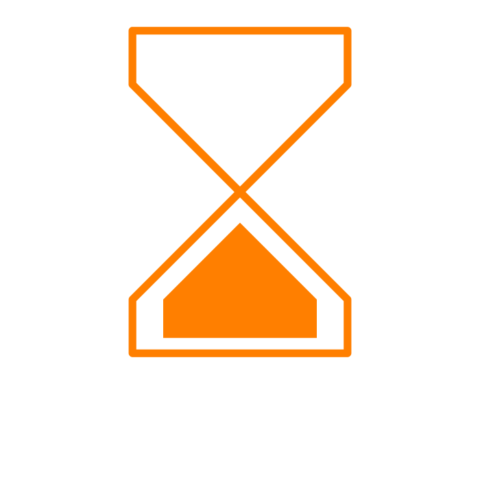

Time as Image
Time is a construct as much as anything we've created as the human race. In 1914 the artist Marcel Duchamp created his
"3 Standard Stoppages" by dropping three one meter long threads from the height of one meter onto canvas. The way that the threads fell were preserved and he created profiles of these shapes and proceeded to ‘standardize’ this random curvature. Could the same be said for time? Is it an invention of our own making?
There are many ways to measure time. Begin by gathering information on one type visual representation of time, by looking at one of of calendars below as well as the assigned reading
'From Sundials to Atomic Clocks'
Astrological, Egyptian, Cherokee, Greek, Georgian, Chinese, Roman, Mayan, Hebrew, Islamic, Hindu
In an 11 x 17 sheet vertically figure out an abstracted graphic system that builds on the rhythm of a unique representation of time. Design symbols to identify the key units of measurements even if these units are open-ended. Find colors that are appropriate to your time keeping system and work within the structure of the page. Together we will put these graphic representations into a finished ‘calendar’ that includes all members of the class.